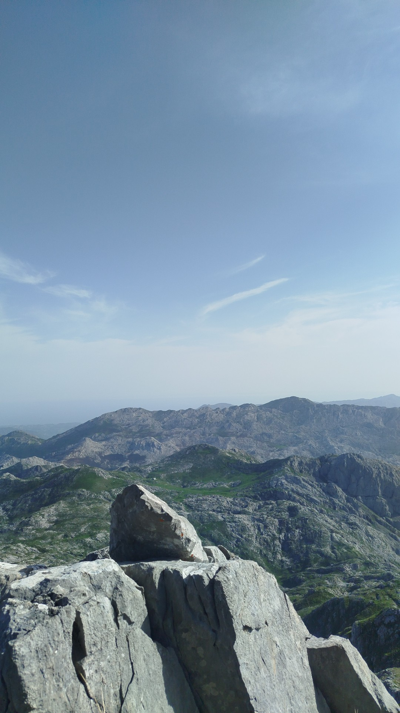
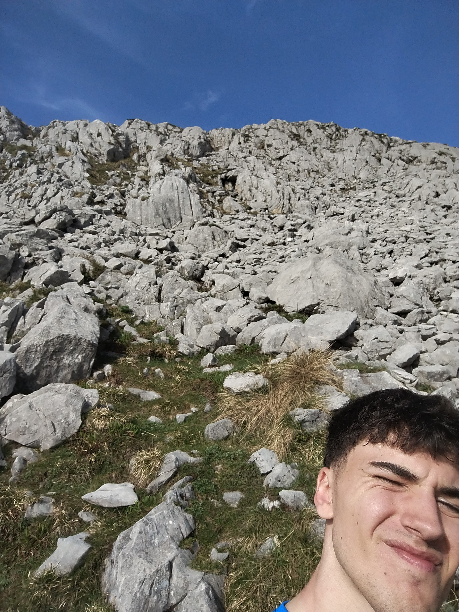
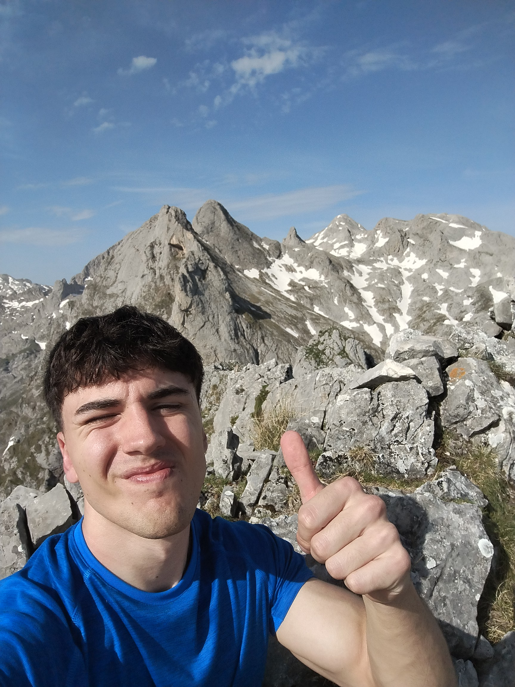
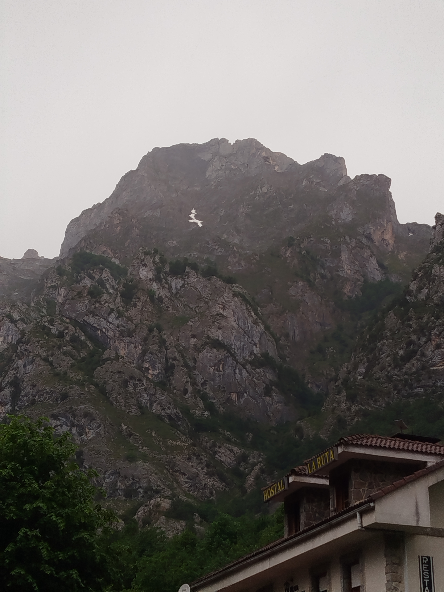
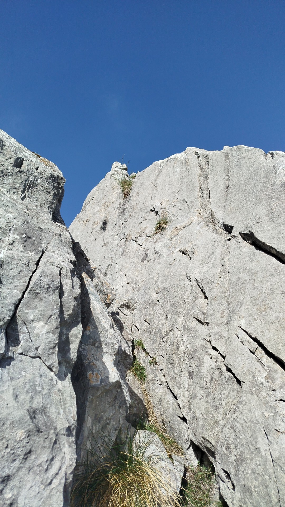

Pico Cuvicente

Superando los 2.000 metros
El Pico Cuvicente, con sus 2.015 metros de altitud, representa uno de los objetivos más accesibles que permiten superar la barrera psicológica y simbólica de los dos mil metros en el Macizo Occidental de los Picos de Europa. No es una cumbre fácil en el sentido estricto, pero tampoco requiere material técnico ni experiencia alpina avanzada. Es, en definitiva, una montaña de alta montaña al alcance del senderista comprometido.
Terreno calizo y fauna salvaje
La ascensión discurre por un paisaje kárstico de gran belleza: lapiaces blancos, dolinas donde se acumula la nieve hasta bien entrada la primavera y alguna que otra cueva visible desde la senda. La presencia de rebecos (Rupicapra pyrenaica parva) es habitual en estas cotas, y si hay suerte, también pueden avistarse buitres leonados planeando sobre las crestas. Un entorno tan salvaje como fotogénico.
La ruta desde Vegarredonda
El acceso más frecuente parte del refugio de Vegarredonda (1.470 m), al que se llega desde el Lago Ercina por una pista bien transitada. Desde Vegarredonda, la senda hacia el Cuvicente gana altitud de forma progresiva hasta alcanzar la cresta que conduce a la cumbre. El desnivel total desde el lago es de unos 950 metros, con una duración aproximada de 4 a 5 horas de subida. La recompensa, unas vistas de 360° que incluyen el Cantábrico al norte y los Urrieles al este, justifica con creces el esfuerzo.




